- En el login por alguna razon el logo esta alineado a la izquierda
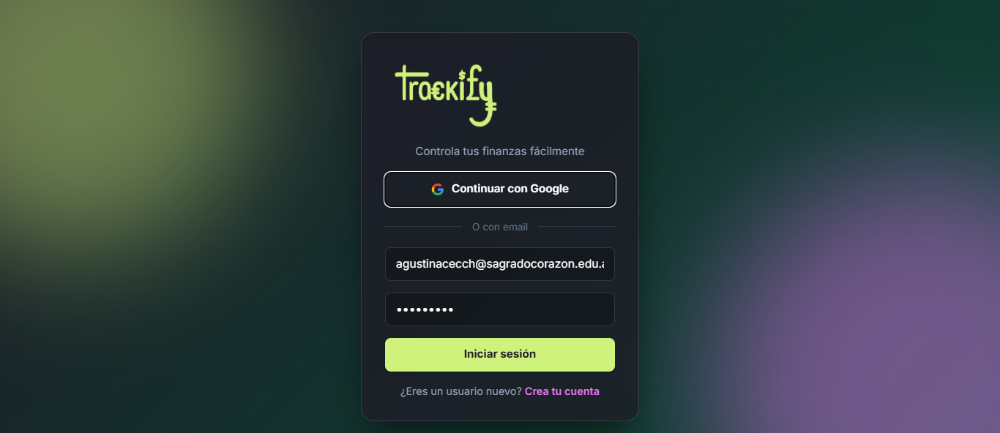
- Achicando la pantalla el logo aparece en el centro del modal???? arreglalo
- Si achicas aun mas se comprime todo horizontalmente
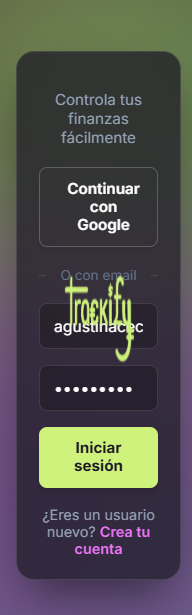
- En la seccion del codigo de verificacion las letras estan demasiado oscuras y, de vuelta, el logo a la izquierda
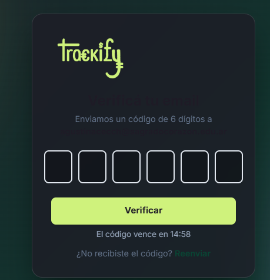
- En el dashboard los botones +ingreso, +gasto y +objetivo estan pegados a las cajas que vienen abajo. despegalas, deben tener un margen grande, y de paso hace que cada boton ocupe lo que ocupan las tarjetas superiores, y hacelos un poco mas altos, porque asi desentona. deben tener tanto las cajas como los botones el mismo ancho, los botones apenas mas altos, no tanto como las cajas
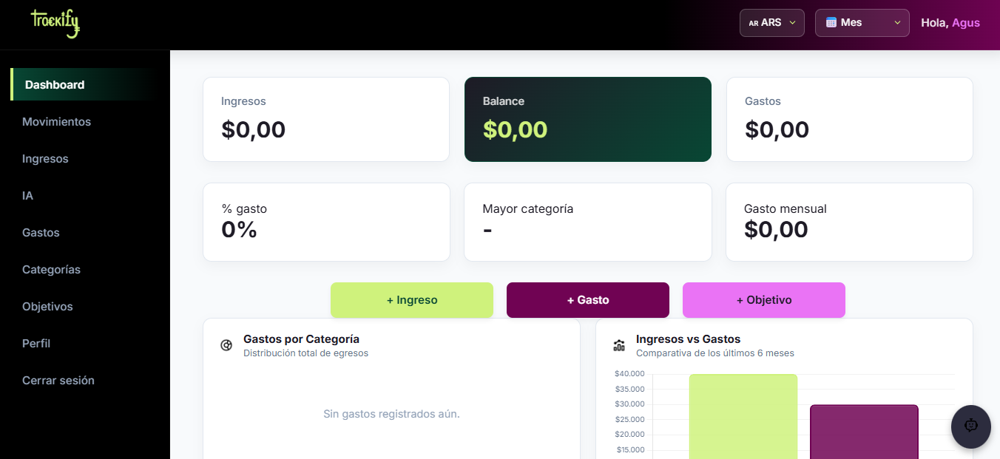
- A la hora de seleccionar fecha par aun movimiento, el mes y el año estan cortados, arreglalo
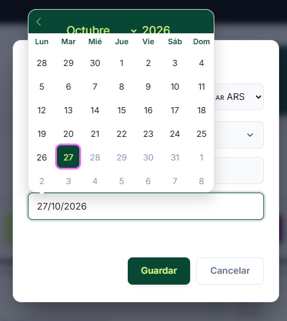
- Si escribis un numero negativo en un ingreso, localhost te dice que pongas un monto valido, pero el valor negativo se guarda igual y en movimientos te muestra: “+$-xxx” eso no debe pasar!
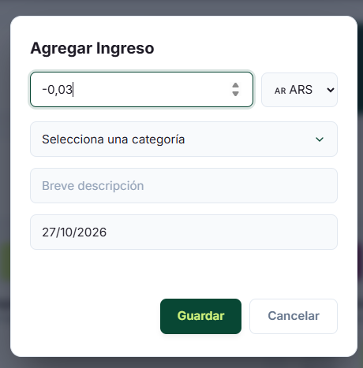
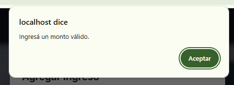
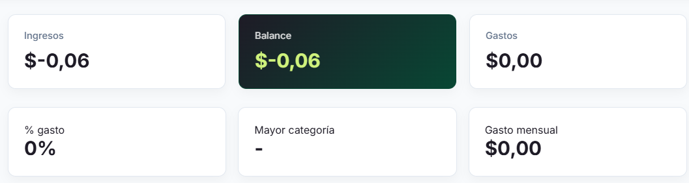
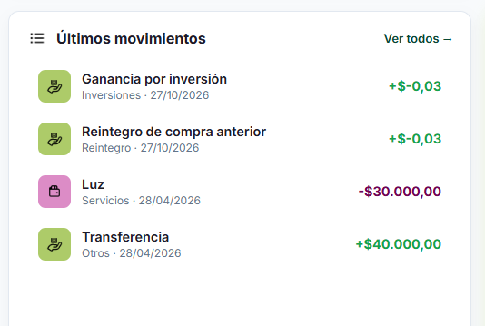
- La mayoría de titulos en cada una de las paginas estan en diferentes posiciones del eje cartesiano. asegurate de que esten todos iguales, si hace falta correr el contenido o hacerlo mas comprimido hacelo de una manera razonable. tiene que estar todo en una altura en comun.
- Los selectores tanto de moneda como de periodo de tiempo no tienen la estetica de trackify, hacelo con la gama de colores y formas establecidas
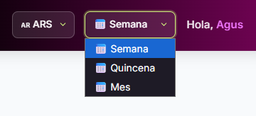
- En el modo oscuro suceden cosas como estas. letras e iconos que no se ven, hay que optimizarlo todo, que se vea bien, que no parezca muy brusco. comparalo con el modo claro y hace que tenga el mayor sentido posible.
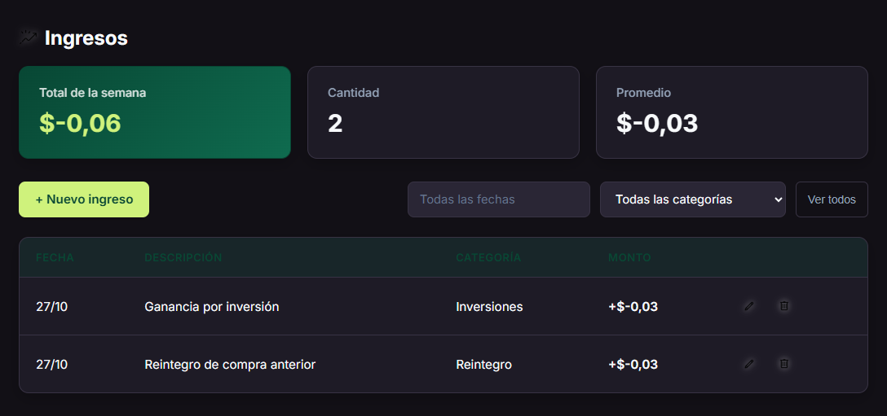
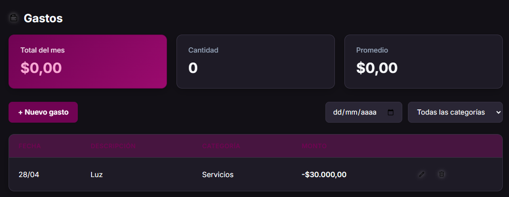
- En movimientos pasa esto con estos selectores, esta todo con colores que no van y no quedan bien, y hay emojis cuando hay carpetas con iconos especificos. razona que icono convendria mas para cada cuestion, reemplaza el emoji por estos iconos que seleccionaste, modifica los colores, y a todos los iconos de la pagina poneles un aura un poco mas potente de la que esta (una gris) porque la verdad que no se distingue que es lo que se esta mostrando
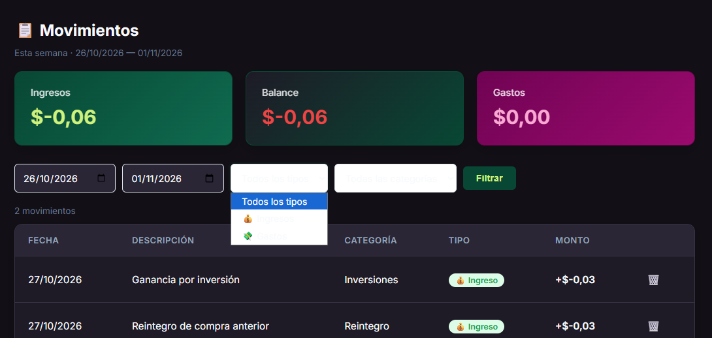
Ahora pasando al responsive:
EN EL DASHBOARD:
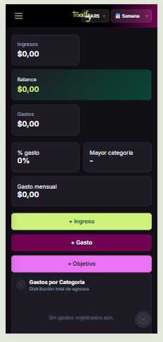
los selectores de moneda y de periodo de mes tapan el logo. optimiza para que eso no pase, podriamos en el responsive ponerlos dentro del menu hamburguesa para que no molesten.
- quiero que las tarjetas de ingresos y gastos ocupen todo el ancho de la pantalla (respentando los margenes obvio) porque la estructura se maneja asi: section.cards tiene 6 cards: ingresos es una, la segunda esta vacia, la tercera y cuarta la ocupa balance, la quinta es gastos y la sexta esta vacia. abajo esta cards small en la que %gasto es la primera, mayor categoria es la segunda, y gasto mensual ocupa la tercera y cuarta. creo que para arreglar esto habria que romper esa logica, al menos en el responsive, porque en el normal no pasa esto.
- los botones de +ingreso, +gasto y +objetivo no deben estar en column, es probable que el usuario misclickee alguno, deben estar como en las cajas superiores en una row, y mas grandes, porque no se entiende.
- acordate del espacio entre el container con los botones y la siguiente tarjeta abajo, tanto en el normal como en el responsive estan pegadas por alguna razon.
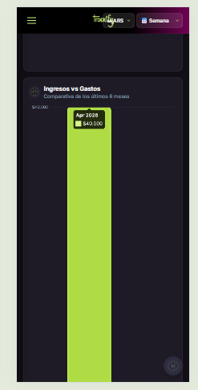
no tengo idea de por que pasa esto. los graficos son ABSURDOS. arreglalos, debe verse mas comprimido, haciendo que cuando clickees te muestre el monto, claramente con las mini barritas atras para orientarte. vos fijate.
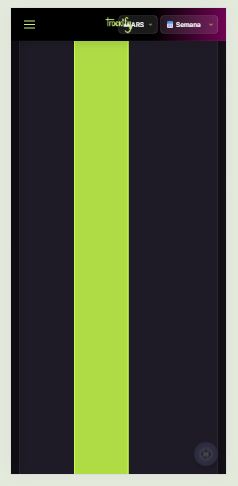
el boton de chat con la ia quedo pequeño, debe estar un poco mas grande y con una crucesita para que el usuario lo pueda sacar si quiere
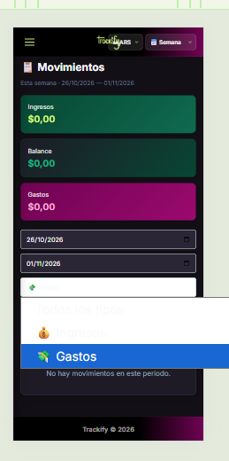
nefasto
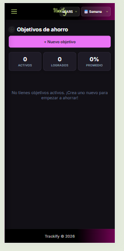
ves que queda todo comprimido? cambia lo que tengas que cambiar, pero hacelo ver bien. asi es horrible y no se entiende nada
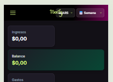
el logo con el nav debe ser mas grande, no se lee nada
- a
- a
- aa